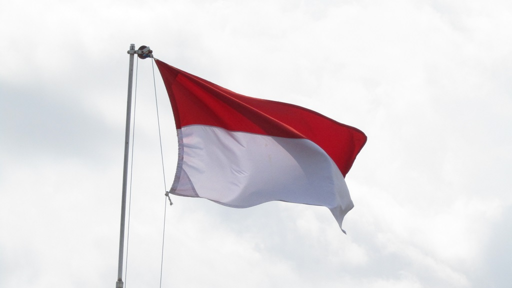

Kesimpulan
Ilmu pengetahuan memainkan peran krusial dalam perkembangan kebudayaan Indonesia dengan menjadi pendorong utama di berbagai aspek.
Di lingkungan masyarakat, ilmu pengetahuan memberikan landasan untuk pemahaman yang mendalam terhadap nilai-nilai, norma, dan pandangan hidup. Membentuk individu yang kritis dan inovatif. Saat masyarakat melihat unsur kebudayaan, ilmu pengetahuan menggali dan mengembangkan kekayaan budaya Indonesia melalui penelitian, pemahaman, dan pelestarian warisan budaya.
Hubungan timbal balik antara ilmu dan kebudayaan menciptakan dinamika yang saling memengaruhi, di mana ilmu pengetahuan membimbing pemikiran dan pengembangan budaya, dan kebudayaan membentuk pertanyaan dan fokus penelitian ilmiah.
Pengaruh ilmu terhadap perkembangan budaya Indonesia mencakup inovasi dalam seni, teknologi, dan bahasa, menciptakan identitas budaya yang dinamis sambil menjaga keberlanjutan nilai-nilai tradisional.
Pada kesimpulannya, ilmu pengetahuan bukan hanya instrumen kemajuan teknologi, tetapi juga kunci dalam menjaga keberagaman dan kekayaan budaya Indonesia melalui pemahaman, pelestarian, dan inovasi.